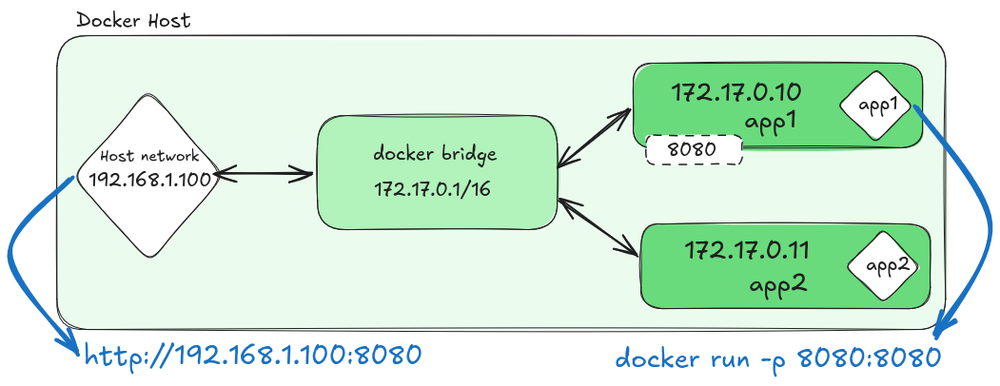

Fundamentos y usos prácticos de Docker
Clase 4 : Redes en Docker
Temas de clase 4
Redes en Docker
Introducción a redes en Docker
Redes en Docker
Docker proporciona un sistema de redes virtuales que permite conectar contenedores entre sí, al host, y con el mundo exterior. Al utilizar Docker, es esencial comprender cómo funcionan las redes dentro de su ecosistema, ya que esto impacta directamente en la conectividad, la seguridad, y el comportamiento de las aplicaciones distribuidas.
Network Drivers
El subsistema de redes de Docker utiliza un conjunto de drivers para proveer de conectividad a los contenedores. Los drivers son:
- Bridge
- Host
- Null/None
- Overlay
- IPvlan
- Macvlan
Se detallarán a continuación
Redes Bridge
Actúa como un switch virtual dentro del host y permite la comunicación entre los contenedores que están en la misma red bridge a su vez que provee aislamiento a los contenedores que están en redes bridge separadas. La red bridge por defecto arranca en 172.17.0.0/16 y a medida que se van creando redes bridge va cambiando la red incrementando el segundo octeto 172.x.0.0/16  Docker Docs: Bridge network driverCustom bridge vs default bridge
Al iniciar Docker, se crea una red predeterminada utilizando el driver bridge, denominada simplemente bridge. Todos los contenedores se conectarán a esta red de manera predeterminada, a menos que se especifique otra red al momento de su creación.
Es posible también crear nuestras propias redes del tipo bridge, conocidas como "User-defined bridge" o "custom bridge". Estas redes ofrecen capacidades superiores, como la inclusión de un DNS interno automático que permite resolver la IP interna de un contenedor utilizando su nombre.
Docker docs: Differences between user-defined bridges and the default bridge
Puertos y redirecciones
Los puertos son esenciales para permitir que los contenedores interactúen con el mundo exterior o con otros contenedores. Cuando un contenedor se ejecuta, puede exponer ciertos puertos para que otros servicios puedan comunicarse con él. Sin embargo, exponer un puerto del contenedor no lo hace automáticamente accesible desde fuera del host y es necesario publicar el puerto para que sea accesible.
Para publicar el puerto se hace con -p P_HOST:P_CONTAINER
docker run -d -p 8080:80 docker/welcome-to-docker
Estas redirecciones se utilizan principalmente cuando estamos trabajando sobre redes bridge.
Docker docs: Publishing and exposing portsRedes Host
Con esta red, el contenedor comparte la pila de red del host, es decir, los servicios que se ejecutan en el contenedor escucharán en la misma dirección IP que el host. Los contenedores que ejecuten este driver no tendrán direcciones IP propias y los puertos estarán mapeados 1:1 con los puertos de escucha del host.Redes Host
En este driver, no hace falta publicar los puertos del contenedor, ya que se abrirán los mismos puertos de escucha del contenedor al host. Esto se debe a que no requiere traducción de direcciones de red (NAT) y no se crea ningún "proxy de usuario" para cada puerto.
Por lo general, es util en los siguientes casos:
- Optimizar la performance de red
- El contenedor necesita manegar un rango de puertos amplio
Está disponible en Docker Desktop a partir de la versión 4.34 pero no viene habilitado por defecto. Para habilitarlo:
- Settings
- Resources/Network
- Habilitar la opción "Enable Host Networking"
- Aplicar y reiniciar
Redes Host
Cuando se levanta un contenedor en modo host, los puertos que expone el contenedor son los mismos que los del host. Esto significa que no es necesario publicar los puertos del contenedor, ya que se abrirán los mismos puertos de escucha del contenedor al host.
Ejemplo:
docker run --rm -d --name web --network host nginx
Luego haga clic aquí. Debería poder ver la ventana de Nginx.
Detener el contenedor:
docker stop web
Redes NONE/Null
Este tipo de red deshabilita todas las capacidades de red del contenedor. Útil en casos donde se necesita un entorno de ejecución totalmente aislado sin acceso a la red.

Redes IPvlan
IPvlan es un driver avanzado que nos brindan control sobre las direcciones IPs de los contenedores. También maneja el tag o trunk y enrutamiento de las vlan en capa 2 y 3 respectivamente.
Cada contenedor puede tener su propia dirección IP de la subred del host compartiendo la dirección MAC del host. Es posible manejar ipvlan en L2 y L3.

La diferenciación del tráfico se realiza a nivel de la capa 3 (dirección IP) en lugar de la capa 2 (dirección MAC).
Docker Docs: Driver IPvlanRedes macvlan
Similar a ipvlan, pero la diferencia es que asigna una dirección MAC única a cada contenedor, lo que permite que cada uno se comporte como un dispositivo físico en la red. Es ideal cuando se requiere que los contenedores se integren directamente con la red física existente y sean accesibles desde fuera del host Docker.
Tener en cuenta:
- El host necesita ser capaz de manegar el modo promiscuo donde una única interfaz física puede tener asignada múltiples direcciones MAC.
- Si la aplicación puede funcionar en modo bridge es posible que sea mejor solución que macvlan.
- Puede ser util cuando necesitamos que un contenedor atienda en un puerto ya utilizado por el host.
IPVlan y MacVlan
| Característica | MacVLAN | IPVLAN |
|---|---|---|
| Dirección MAC | Cada contenedor tiene su propia dirección MAC única. | Todos los contenedores comparten la dirección MAC del host. |
| Capa de red | Funciona principalmente en la Capa 2 (enlace de datos). | Funciona en la Capa 3 (red), con el modo L2 siendo una opción común. |
| Requisitos del switch | Requiere que el switch soporte el modo promiscuo. | No requiere el modo promiscuo, al tener una sola dirección MAC por puerto. |
| Usos principales | Ideal para migraciones de VMs y redes que necesitan un MAC único por host. | Ideal para evitar la saturación de la tabla de direcciones CAM en el switch y cuando hay restricciones de direcciones MAC. |
Redes Overlay
Permite la creación de redes distribuídas que abarcan múltiples hosts, permitiendo que los contenedores que se ejecutan en diferentes hosts puedan comunicarse entre sí como si estuvieran en la misma red local sin que el sistema operativo del host intervenga en el ruteo. Estas redes se usan en clústeres Docker Swarm pero es posible usarlas en instancias de Docker Engine separadas de manera de crear un entorno similar a Docker Swarm.

Consultas
Gestión de redes Docker
Comandos básicos
Gestión de redes Docker
Desde Docker CLI podremos realizar operaciones sobre redes. Con el comando docker network seguido de la instrucción:
connect:Conecta un container a una red.create:Crea una red.disconnect:Desconecta un container de una red.inspect:Muestra información detallada de ona o mas redes.ls:Lista las redesprune:Borra todas las redes sin uso.rm:Borra una o mas redes
Para mas detalles ejecutar el comando:
docker network COMMAND --help
Crear redes Docker
Supongamos que deseamos crear una red modo bridge.
docker network create -d bridge mi_red_bridge
# O mas simple sin ponerle el driver. Ya que bridge es por defecto.
docker network create mi_red_bridge
Ahora crearemos dos contenedores y conectaremos a esa red.
docker run -dit --name contenedor1 --network mi_red_bridge alpine sh
docker run -dit --name contenedor2 --network mi_red_bridge alpine sh
Ejecute el siguiente comando:
docker exec contenedor1 ping -c 3 contenedor2
Listar redes Docker
Usamos el comando docker network ls
docker network ls
NETWORK ID NAME DRIVER SCOPE
cfd3f0bf25fc bridge bridge local
abd3e7e42462 host host local
c1d27506736c none null local
c8f2c9e43721 mi_red_bridge bridge local
Observar las columnas. ID, NAME, DRIVER, SCOPE.
Eliminar redes Docker
Utilizaremos el comando docker network rm NETWORK_ID | NETWORK_NAME
docker network rm mi_red_bridge
nueva_red_bridge # Retorna nombre o hash de la red eliminada
Inspeccionar redes
Se usa el comandodocker network inspect NETWORK_ID | NETWORK_NAME
docker network inspect bridge
Eliminar redes Docker sin uso
Utilizaremos el comando docker network prune
docker network prune
WARNING! This will remove all custom networks not
used by at least one container.
Are you sure you want to continue? [y/N] y
Deleted Networks:
red_sin_usar1 # Ejemplo de una red creada pero no usada
red_sin_usar2 # Ejemplo de una red creada pero no usada
Conectar a redes Docker
Utilizaremos el comando docker network connect NETWORK CONTAINER
docker network create red1 # Creamos una red
docker run -dit --name container1 alpine sh # Corremos un contenedor
# Por defecto estará conectado a la red "bridge"
docker network connect red1 container1
docker inspect container1 # ¿Ha cambiado de red?
Desconectar de redes Docker
Utilizaremos el comando docker network disconnect NETWORK CONTAINER
docker network disconnect red1 container1
docker inspect container1 # ¿Se ha desconectado de de red?
Por defecto volverá a la red bridge.